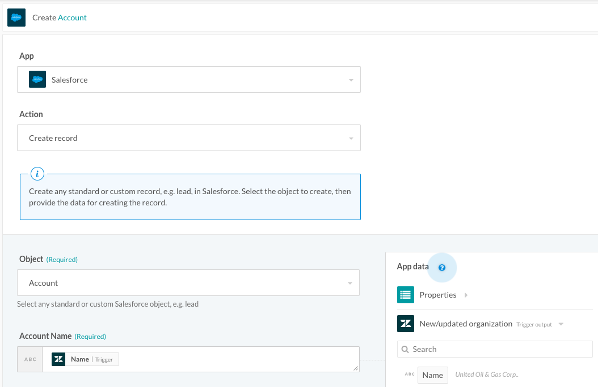
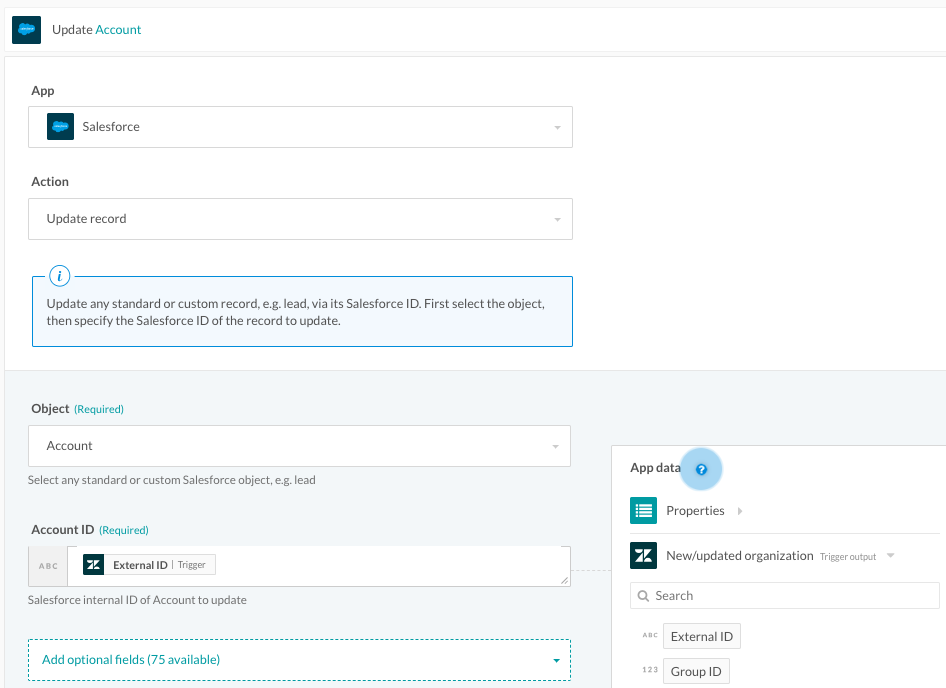
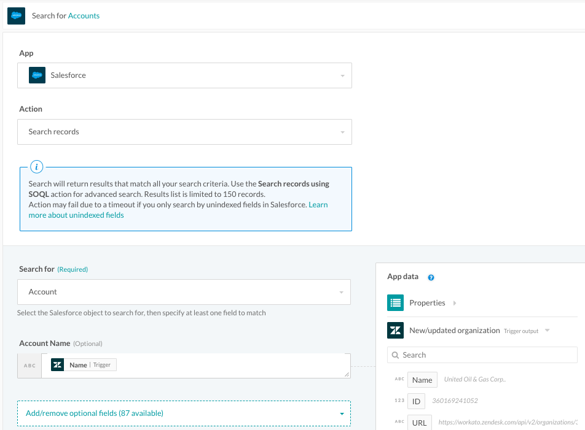
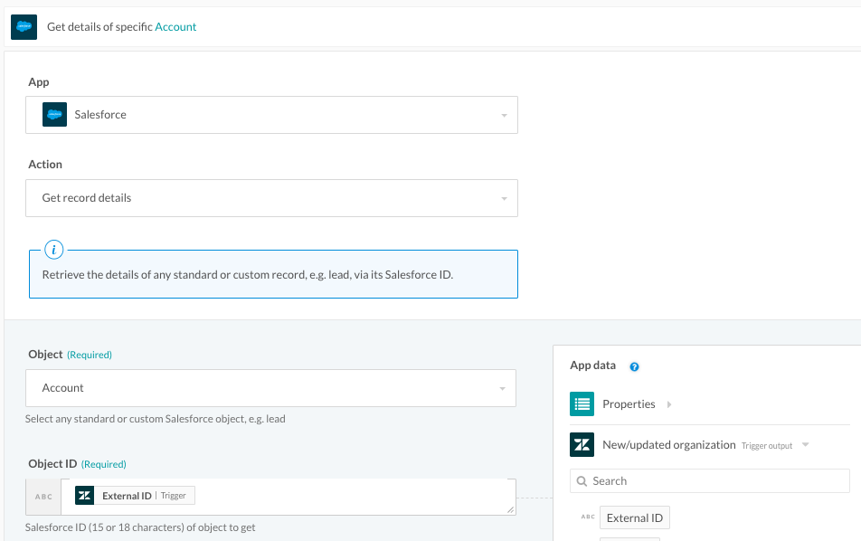
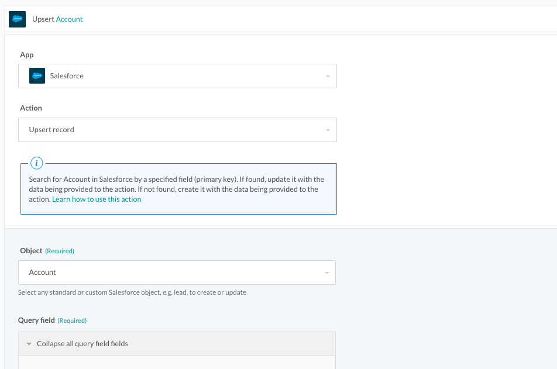
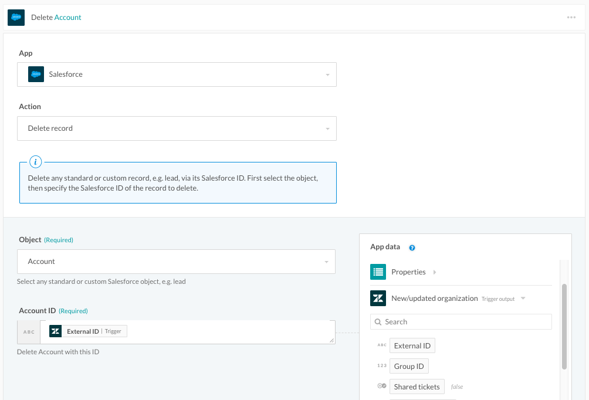

Actions
Every connector makes available a set of actions. Apart from connectors, Workato makes several utility actions available (e.g. create pie chart, get file from URL, etc.).
Actions can be grouped into the following types
Create,
Update,
Upsert (create or update),
Search,
Get,
Delete,
etc.
We will use the Zendesk and Salesforce connectors to illustrate these actions. You may visit the Workato recipe here and install them into your own Workato account if you would like test out these actions yourself.
Create
The Create Object action allows you to create any standard or custom object. In Salesforce, creating an account requires at least an Account Name to be stated.
Create action will typically return an ID that can be used to look up the newly created object. Sometimes, the entire object (with all the fields) will be returned. This depends on the API Workato uses to connect to the apps.

Update
The Update Object action allows you to make changes to existing objects. The input to this action will usually be data that will uniquely identify the object to be updated.
In this example, it will the Salesforce Account ID.
Update action will return the ID or the entire object (with all the fields) of the updated object.

Search
This action is used to search for an object given a set of data that help identify an object.
Search will return all objects matching the specified criteria. i.e. Search returns a list of objects.
If no objects are found, search will return an empty list. i.e. Search will not throw an error. This will cause downstream actions that depend on the results of the search to fail.

Get
Get is similar to search, but is more pinpointed - it requires a unique ID identifying the object to be passed. If object is available, it will return the details of the object.
If the the object is not found, get will thrown an error.
In the case of Salesforce, using the Get action on an Account will require you to input the Salesforce Account ID.

Upsert
Upsert is a combination of search, and create or update. Upsert will first search to see if an object exists, if object exists, it will update it otherwise it will create a new object.
The Salesforce upsert action will perform a search for the object based on the object ID, create the object if it does not exist, else perform an update on it with the input field values.

Delete
Delete actions allows you to delete any object. The input to this action is usually an ID that identifies the object to be deleted. Most apps do not support delete, consequently, Workato does not have broad support for deletes.
As the nature of this action can irreversibly lead to lost data, it is best to be cautious and understand the implications when using this action in Workato recipes.
